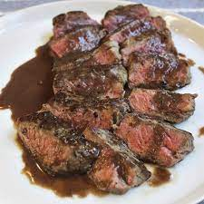

Manhattan Steaks

The perfect savory meal on any night!
This is a meal that goes great with potatoes and a vegetable. The first time I made this for my family they immediately fell in love with it.
Although it does take a little time to make, it sure is worth it. The sauce is creamy yet savory. Once you take your last bite, it will leave you wanting more.
- 2-3 large New York strip steaks
- Salt and Pepper to taste
- 1 tablespoon of vegetable oil
- 1 cup of diced shallots
- 3/4 cup of red wine
- 2 3/4 cup of low-sodium chicken broth
- 3 cloves of garlic
- Half a stick of cold butter
Steps
- Prepare the steaks: secure the 'eye' of meat. Remove the rim of fat. Set aside the trimmings.
- Season steaks with fresh-ground black Pepper, place on wire rack, and age in the refrigerator for 8 hours or overnight.
- Cut meat off the trimmings from the steak. Chop it finely. Place it in a cold pan and heat over medium high. Cook and stir until meat is browned and caramelized. Add shallots and a pinch of salt. Saute until the shallots are golden brown and softened, about 5 minutes.
- Add red wine and bring to a boil. Cook and stir until the wine is almost evaporated, about 2-4 minutes. Add the chicken broth. Bring the liquid to a simmer, then reduce heat to low and cook until the liquid is reduced by half, 60-90 minutes. Strain the sauce into a gravy seperator and chill.
- Before cooking, bring the steaks to room temperature and season with salt.
- Heat vegetable oil in skillet over high heat. Cook until brown on one side, about 4-5 minutes.
- Reduce heat to medium high and turn steaks. Continue to cook until the internal temperature reaches 130 degrees F. at the center. Transfer to a plate and let them rest. Set the skillet aside.
- Heat the empty steak skillet over medium high and pour the strained sauce into the skillet and bring it to a boil while scraping the pan with a wooden spoon. Season the sauce with pepper to taste. Continue to cook until reduced and thickened, about 3-5 minutes.
- Remove the skillet from the heat and whisk butter into sauce until melted and smooth.
- Place steaks on plates and spoon sauce over them.
- Enjoy!